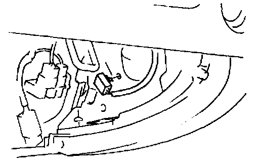

Removal and Installation
WARNING: Handling the air bag module improperly can accidentally deploy the air bag module, which may seriously injure you. Read AIR BAG SYSTEM SERVICE PRECAUTIONS before handling the air bag module.
1. Turn the ignition switch to LOCK.
2. Disconnect the negative battery cable and wait for more than 1 minute to allow the backup power supply of the SAS control module to deplete its stored power.
3. Remove the glove compartment.
4. Remove in the order indicated in the table.
5. Install in the reverse order of removal.
6. Turn the ignition switch to ON.
7. Verify that the air bag system warning light illuminates for approximately 6 seconds then goes off.
8. If the air bag system warning light remains on, off, or repeats flashing after servicing, there are malfunctions in the system. Carry out the inspection again. (Refer to AIR BAG SYSTEM ON-BOARD DIAGNOSIS.)

Connector Installation Note: Install the connector as shown.